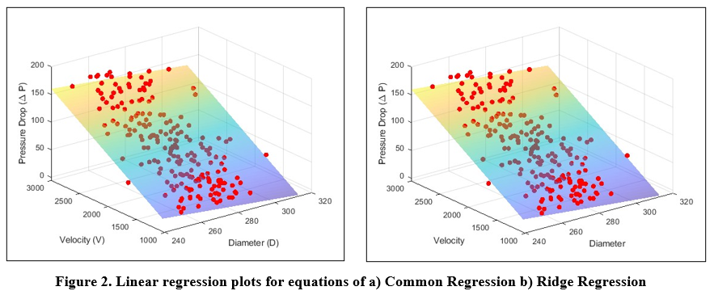
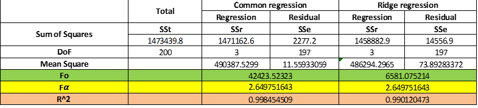

PROJECT OVERVIEW
The Problem:
- In crude oil transportation, excessive pressure drop in pipelines leads to high energy consumption and operational costs. This project aimed to address the challenge of minimizing head loss due to pipe friction while ensuring manufacturing costs remained within budget constraints.
The Goal:
- To optimize pipeline performance by reducing pressure drop in ASTM A312 TP316 seamless pipes under uncertainty, without exceeding 65% of the allotted pipe cost.
The Context:
- Given the critical role of pipeline efficiency in the energy sector, especially in harsh environments, the project utilized advanced simulation and modeling techniques to support industrial applications and cost-efficient design.
METHODS & APPROACH
Your Contribution:
- Led the conceptual design and analysis framework. Conducted Monte Carlo Simulations (MCS), developed regression models, and executed optimization routines. Co-authored the final report and contributed to validation and visualization.
Your Methodology:
- Utilized a combination of Ordinary Least Squares (OLS), Ridge Regression, Monte Carlo Simulation (MCS), and First Order Reliability Method (FORM). Employed MATLAB to perform simulations and minimization using fmincon.
Your Unique Angle:
- Incorporated uncertainty quantification and reliability analysis to move beyond traditional deterministic design, ensuring robust and practical engineering solutions.
RESULT AND ANALYSIS
- Results:
- Achieved a substantial reduction in pressure head loss. Optimized designs showed nearly negligible head loss (as low as ~4.28 mm), indicating high system efficiency.
- Success Metrics::
- Reliability Index (β) improved significantly—from 0.231 (physical model) to 1.436 (regression model). The Probability of Failure (Pf) decreased from ~0.41 to ~0.075.
- Business Impact:
- The optimized pipe design delivers energy savings, enhanced reliability, and reduced material costs—benefits that are highly valuable for large-scale industrial pipeline operations.

LESSON LEARNED & FUTURE PLANS
What You Learned:
- Gained expertise in probabilistic modeling, regression analysis, and optimization under constraints. Deepened understanding of practical applications in mechanical systems and cost-performance tradeoffs.

Future Applications:
- The framework can be extended to other pipeline materials and fluids, or used in industries like water treatment and chemical processing to optimize design under uncertainty.
Next Steps:
- Plan to refine the model by incorporating additional variables like pipe thickness variation, temperature effects, and more advanced surrogate modeling techniques.